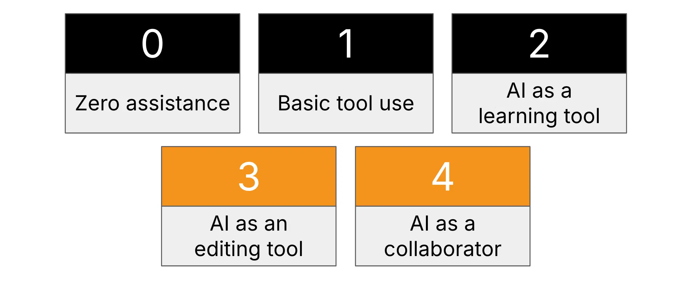

AIは教育分野において最も革新的な技術の一つであるため、教育者が教室で活用できるAIに関する方針について、2つの提言を行います。
多くの学生が、課題にかかる時間を節約するためにAIを利用しています。一部の学生にとっては、AIに関する方針が不明確であることは、ルールを無視して、できるだけ多くの作業をAIに任せようとする誘因となります。また、他の学生にとっては、仲間がAIを使ってわずかな時間で課題を仕上げているのを見ると、自分もそうしようという気持ちに駆られるかもしれません。さらに、多くの教師は、生徒が使用しているツールのすべてを100％把握しているわけでもないため、抜け目のないAI利用方針を策定する余裕がありません。
AIが学習に悪影響を及ぼすのを防ぐための第一歩は、明確なAI利用方針を策定することだと私たちは考えています。数十名の教師や教授との対話を基に、2つのAI利用方針を提案します。最もシンプルなものは、課題の提出にAIの使用を一切認めないという一律の方針です。もう一つは、課題ごとにAIの利用範囲を柔軟に設定できる段階的な方針です。
AIに関する包括的な方針
包括的なAI利用方針は、学生が「不正行為」の定義を曖昧さなく正確に理解する上で役立ちます。以下に、授業のシラバスに盛り込むことができるAI利用方針の例を示します。この方針では、課題の提出にAIを利用することは一切認めませんが、課題以外の場面で授業の概念を探求・理解するためにAIを利用することは許可しています。
学生は以下の行為をしてはなりません：
- AIを活用して、課題をより早く終わらせる近道にしましょう。
- AIを解答の参考資料として活用する。
- 提出された課題の任意の部分をAIを使って作成する。
- 提出された課題のアウトラインやセクション見出しを、AIを使って作成してください。
- AIを使って、提出する課題の下書きを作成してください。
- AIを使用して、提出された原稿を編集、書き直し、または改善してください。
- Grammarlyの「Improve it」やGoogleドキュメントの「Help me write」など、その他の生成AI機能を活用しましょう。
学生は、AIをまるでクラスメートのように利用することができます：
- 会話形式で教材の内容を探求する。
- トピックについてより深く理解するために、説明を求める。
AI利用のためのティア制
このシステムは、一部の課題においてAIの利用範囲を柔軟に設定したいと考えている教育者を対象としています。その利点は、生徒たちが将来、間違いなくより頻繁にAIと接することになる現実社会に備える手助けとなる点にあります。また、AIを活用することで、生徒たちはAIの限界を理解できるようになり、学習性無力感を克服し、自分自身の努力が最も価値を発揮する場面を見極められるようになります。
本システムは、PerkinsらによるAI評価尺度を若干改変したものです。
このシステムはより複雑ですが、AIを活用した授業を行いたいと考えている教育者が、これを使って成果を上げている様子を私たちは実際に目の当たりにしてきました。このようなティア制こそが、AIの利用範囲を明確に区別する最も分かりやすい方法です。例えば、教育者は「すべての課題ではティア2がデフォルトですが、特定のプロジェクトについてはティア4を許可します」と説明することができるでしょう。
なお、ティア0、1、2で学習する学生はAI検出の対象となりませんが、ティア3および4の学生は、AIを多用した場合にAI検出の対象となる可能性があります。
以下の階層は累積的なものです。各階層には、それ以前の階層に含まれるすべての技術が含まれます。
| ティア | 説明 | 例 | AI検出をトリガーする |
|---|---|---|---|
| ティア0： 支援なし | 作品は完全にオリジナルのものであり、AIツールを一切使用せずに作成されたものでなければなりません。これは、学生の思考力、文章力、分析力などの純粋な能力を評価するためです。 | • 筆記課題 • 教科書・ワークシートのみを使った宿題 • 授業中の試験 | いいえ |
| レベル1： 基本的な道具の使い方 | 文法チェックやスペルチェック、Google ドキュメントのアンダーライン表示、計算機。AIモデルは使用しません。生徒が自分で文章を推敲する能力を示した後、自身の課題を改善できるよう支援します。 | • タイプした持ち帰り課題のレポート • Google ドキュメントの基本的なスペルチェック | いいえ |
| レベル2： 学習ツールとしてのAI | AIは学習教材の理解を深めるために利用できますが、最終的な成果物の作成には使用できません。提出物には、AIによって生成されたアウトライン、修正内容、またはコンテンツを含めないでください。 | • 研究資料としてPerplexity/Googleを活用する • ChatGPTを使って概念を明確にする | いいえ |
| レベル3： 編集ツールとしてのAI | AIは言い換え、ブレインストーミング、構成作成に限定して使用します。文章の大部分は依然として学生自身が執筆します。 | • アウトライン作成のAI支援 • 最終稿に対するAIによる添削 • GrammarlyのAIスタイルツール | はい |
| レベル4： 協働アシスタントとしてのAI | AIは、高い目標を掲げる優秀な学生たちと共に、重要な役割を果たしています。単なる基礎的な学習の代行のためではありません。 | • 学術論文を要約するAI • 解析コードを記述するAI • AIに関する研究ディスカッション | はい |
ティア0：支援なし
作品は完全にオリジナルのものとし、AIツールを使用せずに作成してください。これは、学生の思考力、文章力、分析力などの純粋な能力を評価することを目的としています。
これは、従来の「紙とペン」を使った課題に最適です：
- 教科書やワークシート以外の教材を一切必要としない宿題。
- 授業中の試験。
レベル1：基本的な道具の使い方
文法チェックやスペルチェック、Google ドキュメントの下線表示機能、電卓など。Perplexity や ChatGPT のような AI ツールは使用しません。これは、学生が最終提出に向けて自身の課題を改善できるよう支援するためのものです。これらは、学生が自分で課題を編集する能力を示した後で活用すべきです。
これは、課題として提出する小論文に適したレベルです。
- Google ドキュメントのスペルチェック機能を使用（生成AI機能ではありません）。
- 電卓を使う。
- オンラインの引用形式設定ツールの利用。
第2段階：学習ツールとしてのAI
学生は、学習教材と向き合うためにAIを利用することができます。ただし、最終成果物の作成を支援するためにAIを利用してはなりません。また、AIを使用してアウトラインを作成したり、文章を修正したり、提出する最終成果物に含まれるような資料を作成したりしてはなりません。
これは、AIが最終的な成果物を作成するためのものではないことを明確にしつつ、教室にAIを取り入れるための良い方法です。
- PerplexityやGoogleを使って、研究のための一次資料や二次資料を探す。
- ChatGPTを使って概念を明確にする。
- AIアシスタントを使って情報を検索するのは、まるで学生が教科書で何かを調べるようなものです。
レベル3：編集ツールとしてのAI（AI検出がトリガーされる）
文章の明確化、ブレインストーミング、アウトライン作成のために、AIによる言い換えを一部選択します。文章の大部分は依然として学生自身によるものです。学生の作業はAIに置き換えられるのではなく、AIによってサポートされるものです。
これが、AI検知ソフトウェアを起動させる可能性のある最初の段階です。
例をいくつか挙げると：
- AIを使って、不自然な文章を言い換える。
- AIに、箇条書きをエッセイの構成案に変えてもらうよう依頼する。
- AIに完成した文章を添削してもらい、学生がその結果を踏まえて再度見直しを行い、指摘された点に対処できるようにする。
- GrammarlyのAIスタイル変更ツール、またはGoogleドキュメントの「文章作成のサポート」機能を使用する。
レベル4：協力的なアシスタントとしてのAI（AI検知をトリガーする）
AIは、本来なら学生自身がこなすべき実際の作業を担っています。AIをこのように活用する際、成長過程にある学生や学習に苦労している学生の負担を軽減するために用いるべきではありません。これは、野心的な目標を達成したいと考える成熟した学生のためのものです。AIを活用することで、学生はすでにやり方を理解している作業をAIに任せ、目標達成に向けて時間をより有効に活用できるようになります。
このレベルの良い例としては、学術研究を行っている高校3年生が挙げられるでしょう。
- AIを活用した学術論文の要約。
- AIを活用して、データセットを分析するためのコードを作成する。
- AIを活用して、既存のデータから表や図を作成する。
- AIを活用して研究課題について議論し、研究の方向性を明確にする。
私たちの取り組みが世の中に貢献できていることを、いつも嬉しく思っています。もしこの記事がお役に立ちましたら、ぜひ多くの方にご共有ください。また、Pangramが学術的誠実性の維持にどのように役立つかについて詳しく知りたい方は、info@pangram.comまでご連絡ください。

マックスは経験豊富な機械学習エンジニアです。直近ではNuroで自動運転車の開発に携わり、同社のアクティブラーニングの取り組みを主導しました。Google、Two Sigma、Yelpでは、長年にわたり機械学習製品の導入を成功させてきました。
マックスはスタンフォード大学で理論計算機科学の学士号と人工知能の修士号を取得しています。ものづくりへの情熱に加え、彼は『マジック：ザ・ギャザリング』のキューブ・コミュニティでも活発に活動しています。
関連記事

Googleは2026年にAI生成コンテンツをペナルティ対象にするのか？

AI検出スコアにはどのような意味があるのでしょうか？

Google ClassroomにはAI検出機能はあるのか？教師が本当に必要としているもの

AI時代における学術的誠実性へのモザイク的アプローチ（クリス・オストロ氏との対談）

学生の提出物がAIによるものと判定された場合の対応